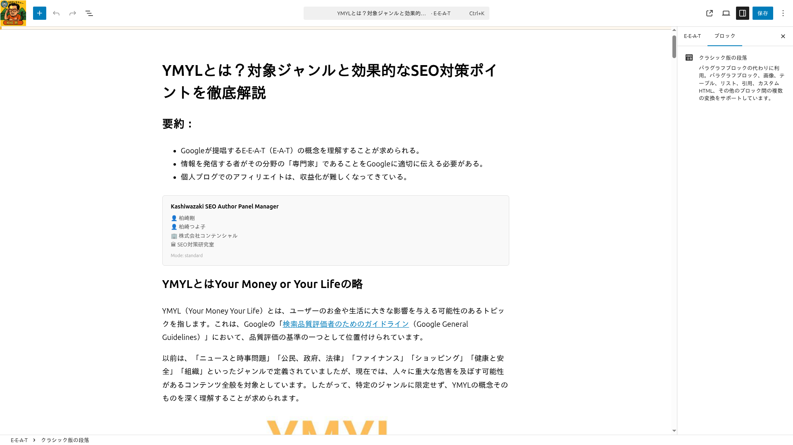
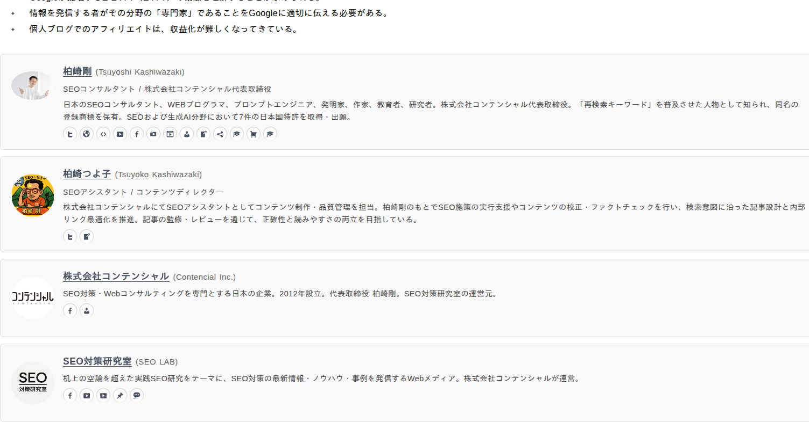

ショートコード＆ブロック
ショートコードとGutenbergブロックを使って、投稿やページに著者パネルを挿入する方法を解説します。
ショートコードの使い方
基本構文は以下のとおりです。
[author_panel persons="1,2" corporations="1" organizations="1"]ショートコード属性一覧
| 属性 | 値 | 説明 |
|---|---|---|
| persons | カンマ区切りID | 表示するPersonエンティティのIDを指定 |
| corporations | カンマ区切りID | 表示するCorporationエンティティのIDを指定 |
| organizations | カンマ区切りID | 表示するOrganizationエンティティのIDを指定 |
| mode | standard / custom | JSON-LD出力モード（デフォルト: standard） |
| target_schema_id | 文字列 | Customモード時に参照する既存スキーマの@id |
| labels | JSON | パネルに表示するラベルのカスタマイズ |
ヒント
エンティティIDは管理画面の一覧で確認できます。
Gutenbergブロックの使い方
1
ブロック追加ボタンをクリック
投稿編集画面で「+」ボタンをクリックし、ブロック追加メニューを開きます。
2
ブロックを検索して挿入
検索欄に「Author Panel」と入力し、表示されたブロックをクリックして挿入します。
3
サイドバーでエンティティを選択
右側のサイドバーから、表示したいPerson・Corporation・Organizationを選択します。
4
モード・ラベルを設定
JSON-LDの出力モードやパネルのラベルをサイドバーで設定します。

メモ
サイドバーから各エンティティの管理画面へ直接リンクできます。
JSON-LDモード
Standardモード
デフォルトのモードです。著者パネルの直後にJSON-LDを出力します。@graphにエンティティの情報が記述されます。
Customモード
既存スキーマの@idをtarget_schema_idで指定し、エンティティを紐づけます。JSON-LDはwp_headで出力されます。
使用例:
[author_panel persons="1" corporations="1" mode="custom" target_schema_id="#article-schema"]注意
target_schema_idは既存スキーマの@idと正確に一致する必要があります。
フロントエンド表示例

Person・Corporation・Organizationのカードがフレックスボックスで横並びに表示されます。各カードには名前・説明・画像・sameAsリンクが含まれます。
sameAsアイコン対応サービス
| サービス | 説明 |
|---|---|
| Twitterプロフィールへのリンクアイコン | |
| Facebookプロフィールへのリンクアイコン | |
| GitHub | GitHubプロフィールへのリンクアイコン |
| LinkedInプロフィールへのリンクアイコン | |
| Instagramプロフィールへのリンクアイコン | |
| YouTube | YouTubeチャンネルへのリンクアイコン |
| Amazon | Amazon著者ページへのリンクアイコン |
| その他 | 汎用リンクアイコンで表示 |